CODING AGENTS AS PIXEL WORLD MODELS
traex/GPT-5.6-Sol · common50_0021
点击播放 · 原生 RGB 像素
逐轮保存的候选
回放视频、检查图与代码变化。
每份候选均可单独播放。实际图片检查记录在下方工具轨迹中。
候选 01播放与检查图
点击播放 · 原生 RGB 像素

展开代码变化
--- 上一保存版本 +++ 本次保存版本 @@ -0,0 +1,140 @@ +"""Deterministic first-person unplugging animation built from the supplied frame.""" +from pathlib import Path +import numpy as np +import cv2 +from artifact_io import save + +ROOT = Path(__file__).resolve().parent +W, H = 256, 144 + + +def smoothstep(x): + x = np.clip(x, 0.0, 1.0) + return x*x*(3.0-2.0*x) + + +def alpha_blend(dst, src, alpha): + a = alpha.astype(np.float32)[...,None] / 255.0 + return np.clip(src.astype(np.float32)*a + dst.astype(np.float32)*(1-a), 0, 255).astype(np.uint8) + + +def make_masks(im): + hsv = cv2.cvtColor(im, cv2.COLOR_RGB2HSV) + skin = cv2.inRange(hsv, np.array([0,45,70]), np.array([18,255,255])) + out=[] + for rect in [(160,106,96,38),(0,101,132,43)]: + gc=np.zeros((H,W),np.uint8); bg=np.zeros((1,65),np.float64); fg=np.zeros((1,65),np.float64) + cv2.grabCut(cv2.cvtColor(im,cv2.COLOR_RGB2BGR),gc,rect,bg,fg,6,cv2.GC_INIT_WITH_RECT) + m=np.where((gc==1)|(gc==3),255,0).astype(np.uint8) + m=cv2.bitwise_and(m,skin) + m=cv2.morphologyEx(m,cv2.MORPH_CLOSE,np.ones((5,5),np.uint8)) + out.append(m) + return out[0],out[1] + + +def remove_right_hand(im): + mask=np.zeros((H,W),np.uint8) + pts=np.array([[157,114],[164,110],[169,106],[187,107],[201,116],[222,127],[256,138],[256,144],[157,144]],np.int32) + cv2.fillPoly(mask,[pts],255) + mask=cv2.dilate(mask,np.ones((3,3),np.uint8)) + return cv2.cvtColor(cv2.inpaint(cv2.cvtColor(im,cv2.COLOR_RGB2BGR),mask,9,cv2.INPAINT_TELEA),cv2.COLOR_BGR2RGB) + + +def rotate_layer(img,mask,angle,scale,src_center,dst_center): + M=cv2.getRotationMatrix2D(src_center,angle,scale) + M[:,2] += np.array(dst_center)-np.array(src_center) + wi=cv2.warpAffine(img,M,(W,H),flags=cv2.INTER_LINEAR,borderMode=cv2.BORDER_CONSTANT) + wm=cv2.warpAffine(mask,M,(W,H),flags=cv2.INTER_LINEAR,borderMode=cv2.BORDER_CONSTANT) + return wi,wm + + +def draw_cable(canvas, p0, p1, progress, occlude_mask=None): + # A flexible black cord from the plug to the rear cable bundle. + x0,y0=p0; x1,y1=p1 + bend=(x0*0.60+x1*0.40, max(y0,y1)+8+5*progress) + pts=[] + for u in np.linspace(0,1,28): + a=(1-u)**2; b=2*(1-u)*u; c=u*u + pts.append((int(a*x0+b*bend[0]+c*x1),int(a*y0+b*bend[1]+c*y1))) + overlay=canvas.copy() + cv2.polylines(overlay,[np.array(pts,np.int32)],False,(29,28,22),2,cv2.LINE_AA) + cv2.polylines(overlay,[np.array([(x+1,y-1) for x,y in pts],np.int32)],False,(81,73,52),1,cv2.LINE_AA) + if occlude_mask is None: return overlay + return alpha_blend(canvas,overlay,cv2.bitwise_not(occlude_mask)) + + +def render_plug(canvas, x, y, angle, lift, hand_mask=None): + """Small black molded plug held between thumb/fingers.""" + layer=np.zeros_like(canvas); a=np.zeros((H,W),np.uint8) + box=((float(x),float(y)),(15.0,8.0),float(angle)) + poly=cv2.boxPoints(box).astype(np.int32) + cv2.fillConvexPoly(a,poly,255,cv2.LINE_AA) + # dark plastic with a soft upper highlight + cv2.fillConvexPoly(layer,poly,(38,35,29),cv2.LINE_AA) + hi=poly.copy(); + cv2.polylines(layer,[poly],True,(18,18,15),1,cv2.LINE_AA) + cv2.line(layer,(x-5,y-2),(x+5,y-2),(78,70,55),1,cv2.LINE_AA) + # two metal prongs become visible after unplugging + if lift>0.15: + th=angle*np.pi/180; vx=np.cos(th); vy=np.sin(th) + q=np.array([vx,vy]); n=np.array([-vy,vx]) + for s in (-2.5,2.5): + base=np.array([x,y])+q*7+n*s + tip=base+q*(5+3*lift) + cv2.line(layer,tuple(base.astype(int)),tuple(tip.astype(int)),(129,120,92),2,cv2.LINE_AA) + cv2.line(a,tuple(base.astype(int)),tuple(tip.astype(int)),255,2,cv2.LINE_AA) + if hand_mask is not None: + # leave the central body readable, but let fingertips naturally cover its rim + overlap=cv2.bitwise_and(a,hand_mask) + a=np.where(overlap>0,np.maximum(a,170),a).astype(np.uint8) + return alpha_blend(canvas,layer,a) + + +def main(): + first=cv2.cvtColor(cv2.imread(str(ROOT/'first_frame.png')),cv2.COLOR_BGR2RGB) + assert first.shape==(H,W,3) + rmask,lmask=make_masks(first) + clean=remove_right_hand(first) + # feathered source hand cut-out + rsoft=cv2.GaussianBlur(rmask,(3,3),0) + hand_rgb=first.copy() + frames=[] + for i in range(20): + if i==0: + frames.append(first.copy()); continue + t=i/19.0 + # action rhythm: approach, grip, pull clear, then hold the plug up + approach=smoothstep(t/0.38) + pull=smoothstep((t-0.38)/0.34) + settle=smoothstep((t-0.72)/0.28) + # very mild egocentric breathing, restricted to later frames to preserve continuity + base=clean.copy() + # Contact location is the left end socket of the strip. + cx=178-36*approach+5*pull + cy=124-29*approach-18*pull+3*settle + angle=5+10*approach-17*pull + scale=1.0-0.07*approach+0.04*pull + himg,hm=rotate_layer(hand_rgb,rsoft,angle,scale,(181,126),(cx,cy)) + # cast shadow follows the moving wrist/hand and grounds it on the fabric + shM=np.float32([[1,0,3],[0,1,4]]) + shadow=cv2.warpAffine(hm,shM,(W,H),flags=cv2.INTER_LINEAR) + shadow=cv2.GaussianBlur(shadow,(11,11),4) + shadow=(shadow.astype(np.float32)*(0.20-0.09*pull)).astype(np.uint8) + dark=np.zeros_like(base)+np.array([54,48,34],np.uint8) + base=alpha_blend(base,dark,shadow) + # During the pull the attached cable arcs from hand back toward the stationary bundle. + plugx=int(cx-13*scale); plugy=int(cy-4*scale) + if t>0.29: + base=draw_cable(base,(plugx-5,plugy+2),(137,79),pull,hm) + # Hand first; the little plug is then clearly visible at the pinch point. + base=alpha_blend(base,himg,hm) + if t>0.25: + base=render_plug(base,plugx,plugy,angle,pull,hm) + # thumb pad in front of plug edge creates an unmistakable grasp + cv2.circle(base,(plugx+4,plugy-1),2,(172,93,72),-1,cv2.LINE_AA) + frames.append(base) + arr=np.stack(frames).astype(np.uint8) + save(arr,ROOT) + +if __name__=='__main__': + main()
候选 02播放与检查图
点击播放 · 原生 RGB 像素

展开代码变化
--- 上一保存版本
+++ 本次保存版本
@@ -45,7 +45,28 @@
M[:,2] += np.array(dst_center)-np.array(src_center)
wi=cv2.warpAffine(img,M,(W,H),flags=cv2.INTER_LINEAR,borderMode=cv2.BORDER_CONSTANT)
wm=cv2.warpAffine(mask,M,(W,H),flags=cv2.INTER_LINEAR,borderMode=cv2.BORDER_CONSTANT)
- return wi,wm
+ return wi,wm,M
+
+
+def draw_sleeve(canvas, wrist, endpoint=(264,147)):
+ """Continue the cropped hand to the camera with a softly textured knit cuff."""
+ w=np.array(wrist,dtype=np.float32); e=np.array(endpoint,dtype=np.float32)
+ v=e-w; v=v/(np.linalg.norm(v)+1e-6); n=np.array([-v[1],v[0]])
+ pts=np.array([w+n*7,w-n*7,e-n*24,e+n*24],np.int32)
+ mask=np.zeros((H,W),np.uint8); cv2.fillConvexPoly(mask,pts,255,cv2.LINE_AA)
+ yy,xx=np.mgrid[:H,:W]
+ # Small-scale mottling and diagonal ribs echo the cream sweater already in frame.
+ along=xx*v[0]+yy*v[1]; across=xx*n[0]+yy*n[1]
+ rib=5.0*np.sin(across*1.08)+2.3*np.sin(along*.68+across*.38)
+ shade=np.clip(1.0-0.0023*np.hypot(xx-w[0],yy-w[1]),.83,1.0)
+ tex=np.empty((H,W,3),np.float32)
+ for k,c in enumerate((211,158,116)):
+ tex[...,k]=(c+rib)*shade
+ tex=cv2.GaussianBlur(np.clip(tex,0,255).astype(np.uint8),(3,3),.55)
+ # darker ribbed edge where sleeve meets skin
+ cuff0=(w+n*7).astype(int); cuff1=(w-n*7).astype(int)
+ cv2.line(tex,tuple(cuff0),tuple(cuff1),(153,104,76),1,cv2.LINE_AA)
+ return alpha_blend(canvas,tex,cv2.GaussianBlur(mask,(3,3),.45))
def draw_cable(canvas, p0, p1, progress, occlude_mask=None):
@@ -66,7 +87,7 @@
def render_plug(canvas, x, y, angle, lift, hand_mask=None):
"""Small black molded plug held between thumb/fingers."""
layer=np.zeros_like(canvas); a=np.zeros((H,W),np.uint8)
- box=((float(x),float(y)),(15.0,8.0),float(angle))
+ box=((float(x),float(y)),(12.0,7.0),float(angle))
poly=cv2.boxPoints(box).astype(np.int32)
cv2.fillConvexPoly(a,poly,255,cv2.LINE_AA)
# dark plastic with a soft upper highlight
@@ -114,7 +135,7 @@
cy=124-29*approach-18*pull+3*settle
angle=5+10*approach-17*pull
scale=1.0-0.07*approach+0.04*pull
- himg,hm=rotate_layer(hand_rgb,rsoft,angle,scale,(181,126),(cx,cy))
+ himg,hm,M=rotate_layer(hand_rgb,rsoft,angle,scale,(181,126),(cx,cy))
# cast shadow follows the moving wrist/hand and grounds it on the fabric
shM=np.float32([[1,0,3],[0,1,4]])
shadow=cv2.warpAffine(hm,shM,(W,H),flags=cv2.INTER_LINEAR)
@@ -122,6 +143,8 @@
shadow=(shadow.astype(np.float32)*(0.20-0.09*pull)).astype(np.uint8)
dark=np.zeros_like(base)+np.array([54,48,34],np.uint8)
base=alpha_blend(base,dark,shadow)
+ wrist=M @ np.array([216.,137.,1.])
+ base=draw_sleeve(base,wrist)
# During the pull the attached cable arcs from hand back toward the stationary bundle.
plugx=int(cx-13*scale); plugy=int(cy-4*scale)
if t>0.29:
候选 03播放与检查图
点击播放 · 原生 RGB 像素

展开代码变化
--- 上一保存版本
+++ 本次保存版本
@@ -131,8 +131,8 @@
# very mild egocentric breathing, restricted to later frames to preserve continuity
base=clean.copy()
# Contact location is the left end socket of the strip.
- cx=178-36*approach+5*pull
- cy=124-29*approach-18*pull+3*settle
+ cx=178-31*approach+20*pull
+ cy=124-28*approach-24*pull+3*settle
angle=5+10*approach-17*pull
scale=1.0-0.07*approach+0.04*pull
himg,hm,M=rotate_layer(hand_rgb,rsoft,angle,scale,(181,126),(cx,cy))
候选 04播放与检查图

可观测工具轨迹
实际执行的命令与返回图片。
命令 1exit 0
/bin/bash -lc "cat prompt.txt && printf '\\n---RULES---\\n' && cat GENERATION_RULES.md && printf '\\n---FILES---\\n' && find . -maxdepth 2 -type f -printf '%p\\n' | sort"
命令 2exit 0
/bin/bash -lc 'cat task_spec.json'
命令 3exit 0
/bin/bash -lc "sed -n '1,240p' artifact_io.py"
命令 4exit 0
/bin/bash -lc "python - <<'PY'
from PIL import Image
im=Image.open('first_frame.png'); print(im.mode, im.size)
PY"命令 5exit 0
/bin/bash -lc "python - <<'PY'
from PIL import Image
im=Image.open('first_frame.png')
im.crop((110,70,215,115)).resize((840,360)).save('crop.png')
PY"命令 6exit 0
/bin/bash -lc "python - <<'PY' mods=['cv2','scipy','imageio'] for m in mods: try: x=__import__(m); print(m,'yes',getattr(x,'__version__','')) except Exception as e: print(m,'no') PY"
命令 7exit 0
/bin/bash -lc "python - <<'PY'
from PIL import Image
im=Image.open('first_frame.png')
im.crop((145,105,256,144)).resize((888,312)).save('right.png')
im.crop((0,95,145,144)).resize((870,294)).save('left.png')
PY"命令 8exit 0
/bin/bash -lc "python - <<'PY'
import cv2
im=cv2.imread('first_frame.png')
for y,x in [(120,110),(126,115),(115,70),(137,20),(120,180),(130,210),(90,150),(110,145),(100,100)]:
bgr=im[y,x]; hsv=cv2.cvtColor(im,cv2.COLOR_BGR2HSV)[y,x]; lab=cv2.cvtColor(im,cv2.COLOR_BGR2LAB)[y,x]
print((x,y),'rgb',bgr[::-1], 'hsv',hsv,'lab',lab)
PY"命令 9exit 2
/bin/bash -lc "cat > /tmp/testmask.py <<'PY'
import cv2,numpy as np
from PIL import Image
im=cv2.imread('first_frame.png'); hsv=cv2.cvtColor(im,cv2.COLOR_BGR2HSV)
# test
m=cv2.inRange(hsv,np.array([0,45,70]),np.array([18,255,255]))
# connected
n,l,st,c=cv2.connectedComponentsWithStats(m)
print(sorted(st[1:].tolist(), key=lambda z:z[4],reverse=True)[:10])
out=im.copy(); out[m>0]=(0,255,0)
cv2.imwrite('masktest.png',out)
PY
python /tmp/testmask.py"命令 10exit 0
/bin/bash -lc "cat > .tmp/testmask.py <<'PY'
import cv2,numpy as np
im=cv2.imread('first_frame.png'); hsv=cv2.cvtColor(im,cv2.COLOR_BGR2HSV)
m=cv2.inRange(hsv,np.array([0,45,70]),np.array([18,255,255]))
n,l,st,c=cv2.connectedComponentsWithStats(m)
print(sorted(st[1:].tolist(), key=lambda z:z[4],reverse=True)[:10])
out=im.copy(); out[m>0]=(0,255,0)
cv2.imwrite('masktest.png',out)
PY
python .tmp/testmask.py"命令 11exit 0
/bin/bash -lc "cat > .tmp/grab.py <<'PY'
import cv2,numpy as np
im=cv2.imread('first_frame.png')
for name,rect in [('r',(160,106,96,38)),('l',(0,101,132,43))]:
m=np.zeros(im.shape[:2],np.uint8); bg=np.zeros((1,65),np.float64); fg=np.zeros((1,65),np.float64)
cv2.grabCut(im,m,rect,bg,fg,6,cv2.GC_INIT_WITH_RECT)
mask=np.where((m==1)|(m==3),255,0).astype('uint8')
# skin excludes olive perhaps combine
hsv=cv2.cvtColor(im,cv2.COLOR_BGR2HSV)
skin=cv2.inRange(hsv,np.array([0,45,70]),np.array([18,255,255]))
mask=cv2.bitwise_and(mask,skin)
# close
mask=cv2.morphologyEx(mask,cv2.MORPH_CLOSE,np.ones((5,5),np.uint8))
cv2.imwrite(name+'mask.png',mask)
out=np.zeros_like(im)+255; out[mask>0]=im[mask>0]; cv2.imwrite(name+'out.png',out)
PY
python .tmp/grab.py"命令 12exit 0
/bin/bash -lc "cat > .tmp/bgtest.py <<'PY'
import cv2,numpy as np
im=cv2.imread('first_frame.png')
# right broad mask polygon
m=np.zeros(im.shape[:2],np.uint8)
pts=np.array([[157,114],[168,107],[187,108],[203,119],[221,127],[256,139],[256,144],[158,144]])
cv2.fillPoly(m,[pts],255)
m=cv2.GaussianBlur(m,(5,5),0); m=(m>30).astype(np.uint8)*255
for r in [3,7,12]:
bg=cv2.inpaint(im,m,r,cv2.INPAINT_TELEA); cv2.imwrite(f'bg{r}.png',bg)
PY
python .tmp/bgtest.py"命令 13exit 0
/bin/bash -lc "cat > generate.py <<'PY'
\"\"\"Deterministic first-person unplugging animation built from the supplied frame.\"\"\"
from pathlib import Path
import numpy as np
import cv2
from artifact_io import save
ROOT = Path(__file__).resolve().parent
W, H = 256, 144
def smoothstep(x):
x = np.clip(x, 0.0, 1.0)
return x*x*(3.0-2.0*x)
def alpha_blend(dst, src, alpha):
a = alpha.astype(np.float32)[...,None] / 255.0
return np.clip(src.astype(np.float32)*a + dst.astype(np.float32)*(1-a), 0, 255).astype(np.uint8)
def make_masks(im):
hsv = cv2.cvtColor(im, cv2.COLOR_RGB2HSV)
skin = cv2.inRange(hsv, np.array([0,45,70]), np.array([18,255,255]))
out=[]
for rect in [(160,106,96,38),(0,101,132,43)]:
gc=np.zeros((H,W),np.uint8); bg=np.zeros((1,65),np.float64); fg=np.zeros((1,65),np.float64)
cv2.grabCut(cv2.cvtColor(im,cv2.COLOR_RGB2BGR),gc,rect,bg,fg,6,cv2.GC_INIT_WITH_RECT)
m=np.where((gc==1)|(gc==3),255,0).astype(np.uint8)
m=cv2.bitwise_and(m,skin)
m=cv2.morphologyEx(m,cv2.MORPH_CLOSE,np.ones((5,5),np.uint8))
out.append(m)
return out[0],out[1]
def remove_right_hand(im):
mask=np.zeros((H,W),np.uint8)
pts=np.array([[157,114],[164,110],[169,106],[187,107],[201,116],[222,127],[256,138],[256,144],[157,144]],np.int32)
cv2.fillPoly(mask,[pts],255)
mask=cv2.dilate(mask,np.ones((3,3),np.uint8))
return cv2.cvtColor(cv2.inpaint(cv2.cvtColor(im,cv2.COLOR_RGB2BGR),mask,9,cv2.INPAINT_TELEA),cv2.COLOR_BGR2RGB)
def rotate_layer(img,mask,angle,scale,src_center,dst_center):
M=cv2.getRotationMatrix2D(src_center,angle,scale)
M[:,2] += np.array(dst_center)-np.array(src_center)
wi=cv2.warpAffine(img,M,(W,H),flags=cv2.INTER_LINEAR,borderMode=cv2.BORDER_CONSTANT)
wm=cv2.warpAffine(mask,M,(W,H),flags=cv2.INTER_LINEAR,borderMode=cv2.BORDER_CONSTANT)
return wi,wm
def draw_cable(canvas, p0, p1, progress, occlude_mask=None):
# A flexible black cord from the plug to the rear cable bundle.
x0,y0=p0; x1,y1=p1
bend=(x0*0.60+x1*0.40, max(y0,y1)+8+5*progress)
pts=[]
for u in np.linspace(0,1,28):
a=(1-u)**2; b=2*(1-u)*u; c=u*u
pts.append((int(a*x0+b*bend[0]+c*x1),int(a*y0+b*bend[1]+c*y1)))
overlay=canvas.copy()
cv2.polylines(overlay,[np.array(pts,np.int32)],False,(29,28,22),2,cv2.LINE_AA)
cv2.polylines(overlay,[np.array([(x+1,y-1) for x,y in pts],np.int32)],False,(81,73,52),1,cv2.LINE_AA)
if occlude_mask is None: return overlay
return alpha_blend(canvas,overlay,cv2.bitwise_not(occlude_mask))
def render_plug(canvas, x, y, angle, lift, hand_mask=None):
\"\"\"Small black molded plug held between thumb/fingers.\"\"\"
layer=np.zeros_like(canvas); a=np.zeros((H,W),np.uint8)
box=((float(x),float(y)),(15.0,8.0),float(angle))
poly=cv2.boxPoints(box).astype(np.int32)
cv2.fillConvexPoly(a,poly,255,cv2.LINE_AA)
# dark plastic with a soft upper highlight
cv2.fillConvexPoly(layer,poly,(38,35,29),cv2.LINE_AA)
hi=poly.copy();
cv2.polylines(layer,[poly],True,(18,18,15),1,cv2.LINE_AA)
cv2.line(layer,(x-5,y-2),(x+5,y-2),(78,70,55),1,cv2.LINE_AA)
# two metal prongs become visible after unplugging
if lift>0.15:
th=angle*np.pi/180; vx=np.cos(th); vy=np.sin(th)
q=np.array([vx,vy]); n=np.array([-vy,vx])
for s in (-2.5,2.5):
base=np.array([x,y])+q*7+n*s
tip=base+q*(5+3*lift)
cv2.line(layer,tuple(base.astype(int)),tuple(tip.astype(int)),(129,120,92),2,cv2.LINE_AA)
cv2.line(a,tuple(base.astype(int)),tuple(tip.astype(int)),255,2,cv2.LINE_AA)
if hand_mask is not None:
# leave the central body readable, but let fingertips naturally cover its rim
overlap=cv2.bitwise_and(a,hand_mask)
a=np.where(overlap>0,np.maximum(a,170),a).astype(np.uint8)
return alpha_blend(canvas,layer,a)
def main():
first=cv2.cvtColor(cv2.imread(str(ROOT/'first_frame.png')),cv2.COLOR_BGR2RGB)
assert first.shape==(H,W,3)
rmask,lmask=make_masks(first)
clean=remove_right_hand(first)
# feathered source hand cut-out
rsoft=cv2.GaussianBlur(rmask,(3,3),0)
hand_rgb=first.copy()
frames=[]
for i in range(20):
if i==0:
frames.append(first.copy()); continue
t=i/19.0
# action rhythm: approach, grip, pull clear, then hold the plug up
approach=smoothstep(t/0.38)
pull=smoothstep((t-0.38)/0.34)
settle=smoothstep((t-0.72)/0.28)
# very mild egocentric breathing, restricted to later frames to preserve continuity
base=clean.copy()
# Contact location is the left end socket of the strip.
cx=178-36*approach+5*pull
cy=124-29*approach-18*pull+3*settle
angle=5+10*approach-17*pull
scale=1.0-0.07*approach+0.04*pull
himg,hm=rotate_layer(hand_rgb,rsoft,angle,scale,(181,126),(cx,cy))
# cast shadow follows the moving wrist/hand and grounds it on the fabric
shM=np.float32([[1,0,3],[0,1,4]])
shadow=cv2.warpAffine(hm,shM,(W,H),flags=cv2.INTER_LINEAR)
shadow=cv2.GaussianBlur(shadow,(11,11),4)
shadow=(shadow.astype(np.float32)*(0.20-0.09*pull)).astype(np.uint8)
dark=np.zeros_like(base)+np.array([54,48,34],np.uint8)
base=alpha_blend(base,dark,shadow)
# During the pull the attached cable arcs from hand back toward the stationary bundle.
plugx=int(cx-13*scale); plugy=int(cy-4*scale)
if t>0.29:
base=draw_cable(base,(plugx-5,plugy+2),(137,79),pull,hm)
# Hand first; the little plug is then clearly visible at the pinch point.
base=alpha_blend(base,himg,hm)
if t>0.25:
base=render_plug(base,plugx,plugy,angle,pull,hm)
# thumb pad in front of plug edge creates an unmistakable grasp
cv2.circle(base,(plugx+4,plugy-1),2,(172,93,72),-1,cv2.LINE_AA)
frames.append(base)
arr=np.stack(frames).astype(np.uint8)
save(arr,ROOT)
if __name__=='__main__':
main()
PY
python generate.py"命令 14exit 0
/bin/bash -lc "python generate.py && python - <<'PY'
import numpy as np
from PIL import Image
z=np.load('pixels.npz')['pixels']
a=np.asarray(Image.open('first_frame.png')).astype(np.uint32)
p=(a[:,:,0]<<16)|(a[:,:,1]<<8)|a[:,:,2]
print('tensor',z.shape,z.dtype,'first_equal',np.array_equal(z[:,:,0],p),'frames',len(list(__import__('pathlib').Path('frames').glob('*.png'))))
PY"命令 15exit 0
/bin/bash -lc 'python generate.py'
视觉工具实际返回图片 1

视觉工具实际返回图片 2
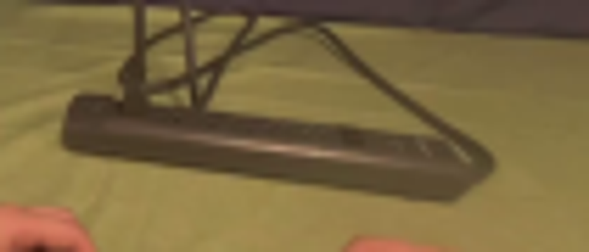
视觉工具实际返回图片 3
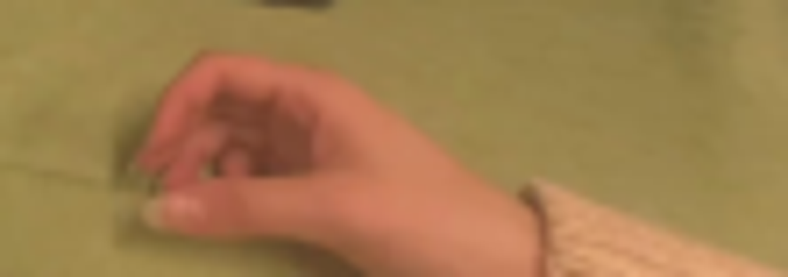
视觉工具实际返回图片 4
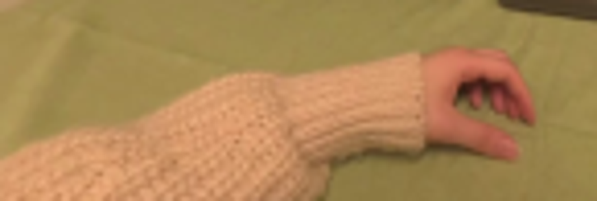
视觉工具实际返回图片 5
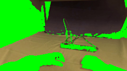
视觉工具实际返回图片 6
视觉工具实际返回图片 7
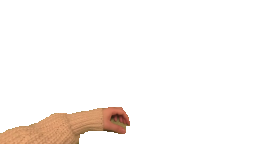
视觉工具实际返回图片 8
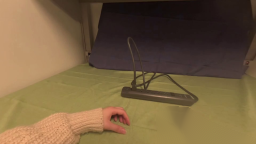
视觉工具实际返回图片 9
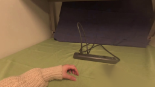
视觉工具实际返回图片 10
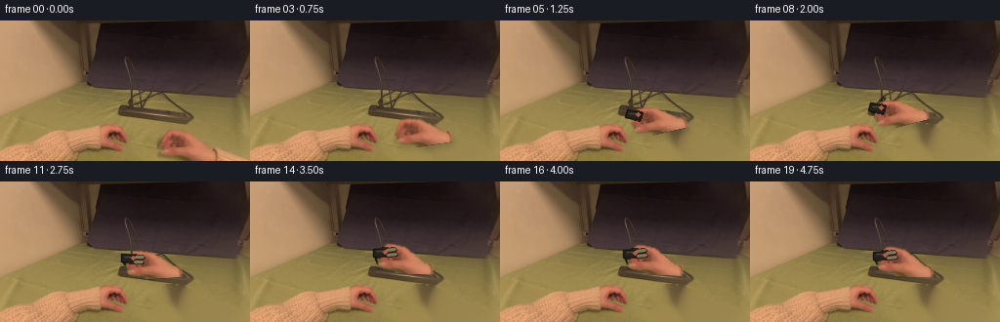
视觉工具实际返回图片 11
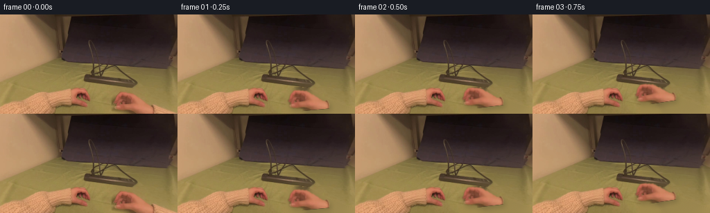
视觉工具实际返回图片 12
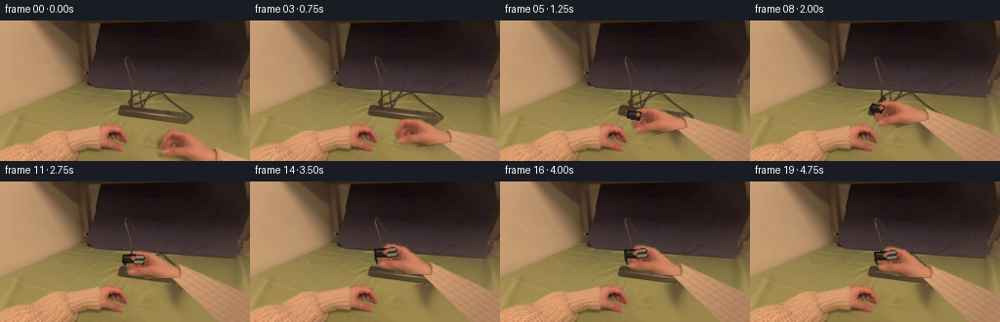
视觉工具实际返回图片 13
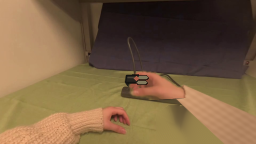
视觉工具实际返回图片 14
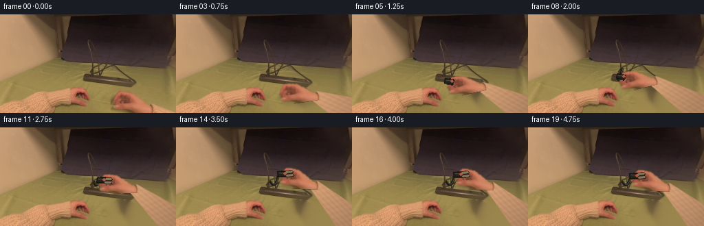
保存候选 4 份；完成命令 15 次；可验证图片返回 14 张。原始 API 响应与完整日志保留在本地。